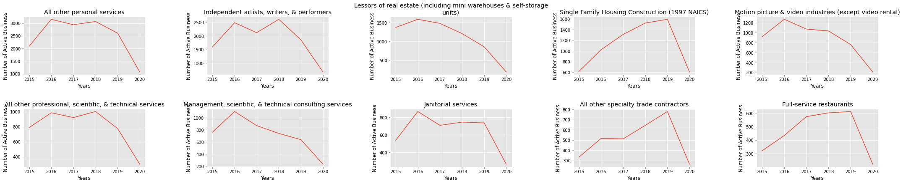
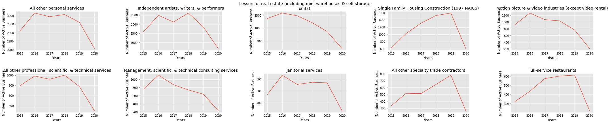

New Active Businesses in LA Between 2015 - July 2020.
Background Info

The project goals
The goal of this project is to evaluate the number of new active businesses that are tracked by the LA
Office for Finance, and determine if the onset of COVID-19 has an impact on the number of new active
businesses, and more specifically:
The absolute number of new active businesses by city
The absolute number by new active businesses by business classification
The percent change of new active business between 2019 to 2020
Resources & Citations
Research Objectives
- Data extraction, transformation, loading, and exploring pipeline.
- Question 1: How have the Total Number of New Active Businesses Changed Between 2015 - 2020?
- Question 2: What is the total number of active business by city per year?
- Question 3: How have the number of new businesses change by city between 2015-2020?
- Question 4: What is are the number of new monthly businesses between Jan 2018 - July 2020?
- Question 5: Is there a difference in the number of new businesses by classification?
Methods
Data
- The data was obtained from data.lacity.org using the python module sodapy, to make the API call, and extract the data from their website.Data.lacity.org
Analysis
The programming language Python was used in this project. The matplotlib library was used
to visualize the data. Pandas was used to wrangle the data.
Results:
Data extraction, transformation, loading, and exploring pipeline.
- Import data using pandas.
- Change Datatypes.
- Remove missing data.
- Use matplotlib to visualize data.
Question 1: How have the Total Number of New Active Businesses Changed Between 2015 -
2020?

Figure 1. s
Question 2: What is the total number of active business by city per
year?
Table 1. Table title

Question 3: How have the number of new businesses change by city between
2015-2020?
Table 2. Table title


Figure 2.
Question 4: What is are the number of new monthly businesses between Jan 2018 - July
2020?

Figure 3.
Question 5: Is there a difference in the number of new businesses by
classification?
Table 3. Table title
{kind=link}
Table 4. Table title

Table 5. Table title
 

{kind=link}
Figure 4.